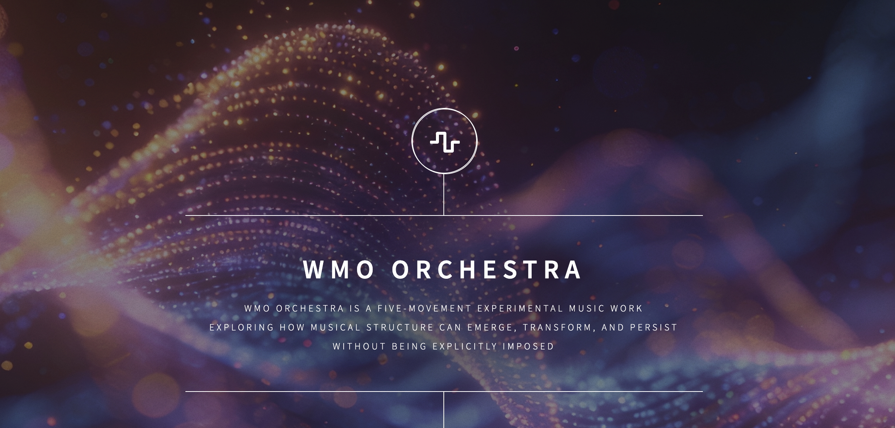

WMO Orchestra
A musical research artefact in applied harmonic epistemology

WMO Orchestra sits in the “Unexpected artefacts” collection because it did not begin as a plan to “compose an album.” It began as an investigation: what happens if musical structure is treated as a field of constraints, and listening is treated as a mode of inquiry rather than a search for expression or narrative? In the essay, the surprise isn’t that a piece emerged — it’s that what emerged remained compelling to listen to, even without the usual protective rituals of composition (refinement, polishing, “defending” themes, etc.).
This work is therefore best read as a research object that happens to be musical: a set of controlled perceptual conditions that you can enter repeatedly, where form is not announced, but discovered through attention and time.
What the work is doing
Across its movements, WMO Orchestra explores a particular proposition:
Structure can be perceptible without being enforced.
Coherence can arise through relational persistence, overlap, and listening under uncertainty — not through a central organising authority.
The essay frames each movement less as a “section of a story” and more as a distinct experimental condition. Earlier movements establish the perceptual “rules of the world” (identity, time, pitch, and constraint without a conductor). Later movements test what remains when articulation collapses, and whether “coherence” requires closure at all.
A listening guide, in plain terms
The most useful way to approach the piece is to listen the way you’d examine a diagram: not for what it “means,” but for what stays stable, what becomes unstable, and what your perception is forced to do in order to keep recognising structure.
Movement IV: erosion as structure (not symbolism)
One of the essay’s key moves is to treat absence non-symbolically. In many musical traditions, fragmentation or silence is used expressively (loss, critique, negation). Here, the essay insists the opposite: the erosion is structural rather than representational — what disappears is not “material” as a metaphor, but availability as a perceptual condition.
Mechanically, this movement treats rendering itself as a compositional operation. Instead of variation or thematic development, the material is repeatedly passed through a constraining process where articulation becomes progressively less available; density and overlap “consume capacity for presentation.” The form is produced through controlled disappearance — a kind of engineered lossiness that becomes grammar.
The listener’s job changes: you are not asked to “interpret loss,” but to keep recognising structure when full articulation is no longer possible. Coherence relocates into memory and anticipation rather than direct presentation.
The final condition: silence as residue (not an ending)
Later, the work arrives at a silence that the essay refuses to treat as a narrative conclusion. It is not a pause that promises continuation; it is a final condition. What remains is described as residue — the persistence of perceptual organisation after the material support has ceased. Structure is no longer externalised; it exists only as carried attention.
The unresolved question left behind is pointed: not “how coherence was achieved,” but whether coherence requires achievement at all — and whether authority was ever essential to meaning.
What WMO Orchestra is not (and why that matters)
A large part of the essay is devoted to boundary-setting — not as branding, but to keep the work intelligible.
- Not expressive music: it is not trying to express emotion, narrative, or interiority.
- Not symphonic/dialectical logic: despite the orchestral scope, there is no exposition–development–recapitulation; no hierarchy of themes; no “resolution.” The absence of a conductor reflects the absence of organising authority at every level.
- Not process music: process is present, but subordinate to context; the work does not present a rule as the aesthetic object.
- Not indeterminate/aleatoric: nothing relies on chance or performer choice; what varies is when coherence becomes perceptible.
- Not symbolic or allegorical: absence, erosion, and silence do not “stand for” something else; they are meant to be perceived as missing, not interpreted as representation.
- Not an illustration of theory: it enters dialogue with theory, but does not attempt to demonstrate or validate a framework.
That last point matters: It is music used to set up conditions where certain epistemic problems become unavoidable in experience, without being solved discursively.
WMO Orchestra belongs here because it’s a concrete example of a wider RDCJ theme: methods and meanings can be structural rather than declarative.
This article frames the artefact; the essay establishes the conditions under which it can be properly understood; and the music itself allows those conditions to be experienced directly through listening. Readers seeking the full articulation of the work — including its theoretical commitments, methodological limits, and internal logic — should proceed to the complete essay below.